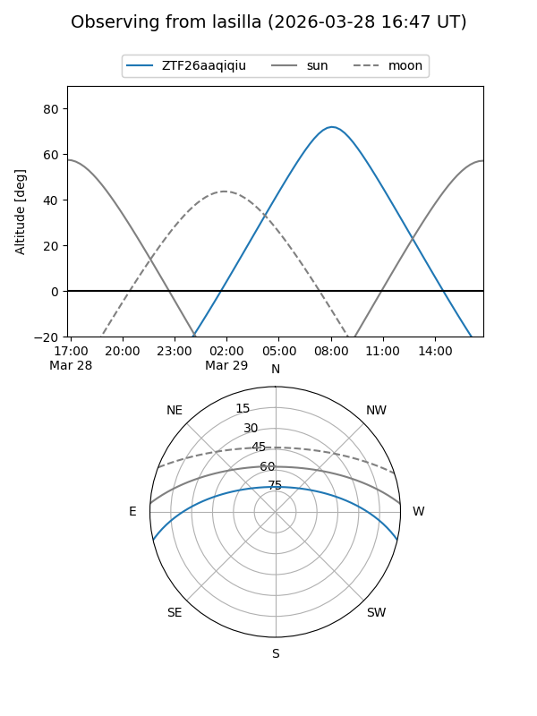
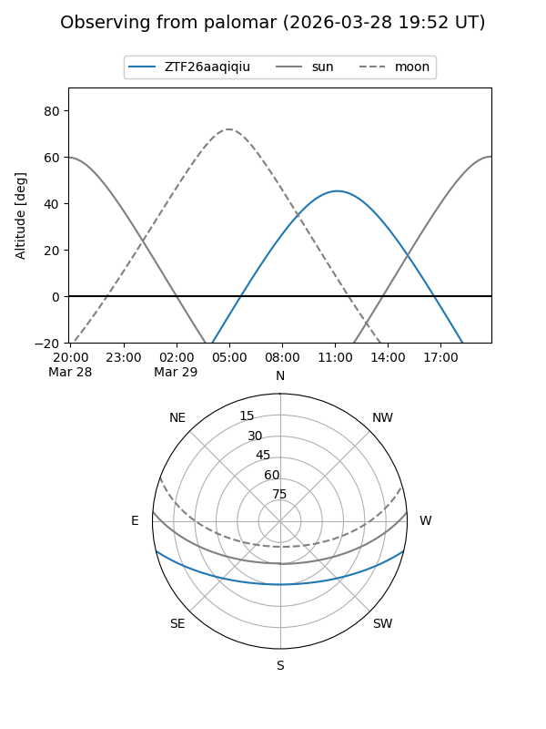

ZTF26aaqiqiu
Target ZTF26aaqiqiu at 2026-03-29 13:24
Aliases and brokers:
FINK: link
Lasair: link
ALeRCE: link
alt names
ZTF26aaqiqiu (ztf,fink_ztf)
Coordinates:
equatorial (ra, dec) = 236.7952,-11.18727
equatorial (HMS+DMS) = 15:47:10.85,-11:11:14.19
galactic (l, b) = (356.9175,+32.70068)
Flags:
Photometry:
last ztfg=17.17, ztfr=16.19
1 ztfg, 1 ztfr detections
Lightcurve
Visibility


Additional plots